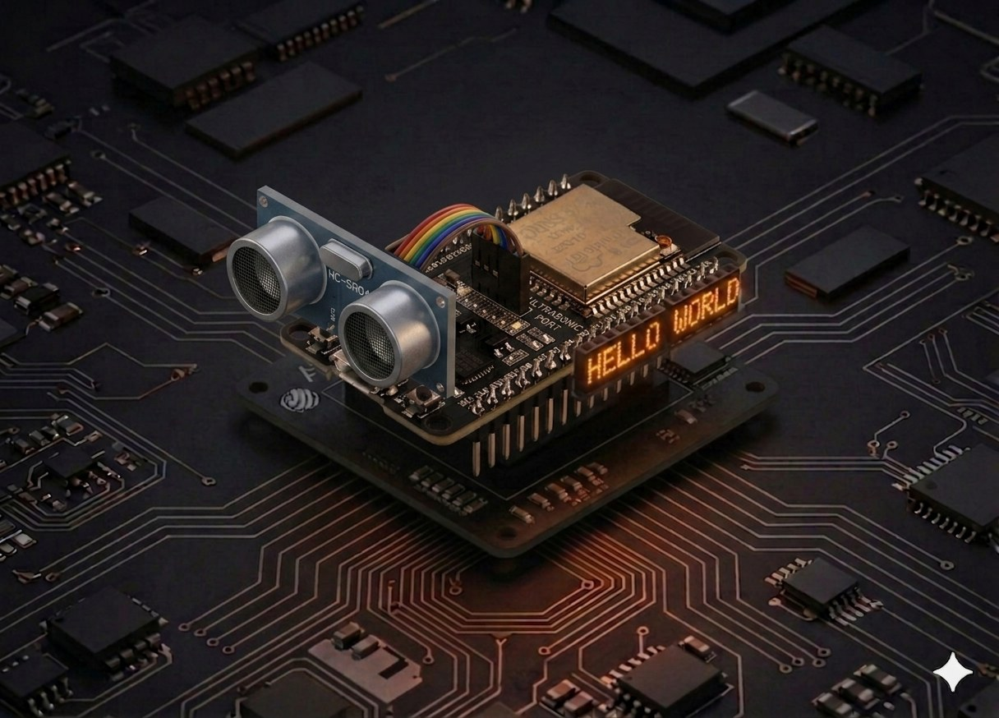

Senzor ultrasonic
Măsoară distanța până la obiecte cu HC-SR04 și ESP32 — emite un puls la 40 kHz și cronometrează ecoul pentru a calcula distanța în cm.
Senzor ultrasonic¶
HC-SR04 este senzorul standard pentru „cât de departe e obiectul în fața mea?". Îl găsești în roboții care evită obstacole, în sistemele de parcare și în alarme de prezență. Aici îl conectăm la ESP32 și citim distanța în MicroPython folosind machine.time_pulse_us.

Descriere¶
Senzorul HC-SR04 are 4 pini: VCC, Trig, Echo, GND. Principiul de funcționare e identic cu cel al liliecilor:
- ESP32 dă un puls
HIGHde 10 microsecunde pe pinulTrig. - Senzorul emite 8 cicluri de ultrasunet la 40 kHz (inaudibil pentru om).
- Când ultrasunetul lovește un obstacol, se întoarce ca ecou.
- Pinul
EchorămâneHIGHexact cât durează drumul dus-întors al sunetului. - ESP32 cronometrează durata pulsului cu
time_pulse_usși calculează distanța.
Calculul distanței¶
Sunetul se propagă în aer cu ~343 m/s = 0,0343 cm/µs. Pentru că durata măsurată reprezintă drumul dus-întors, împărțim la 2:
Sau, echivalent: durată / 58,3.
Domeniu util: 2 cm – 400 cm, cu precizie de ~3 mm.
Componente¶
| Component | Cantitate |
|---|---|
| Placă ESP32 (DevKit V1) | 1 |
| Modul HC-SR04 (sau HC-SR04P — varianta 3,3 V) | 1 |
| Rezistență 1 kΩ | 1 (numai pentru HC-SR04 clasic) |
| Rezistență 2 kΩ | 1 (numai pentru HC-SR04 clasic) |
| Fire jumper F-M | 4 |
HC-SR04 trimite 5 V pe Echo — ESP32 acceptă doar 3,3 V
Modulul HC-SR04 clasic este alimentat la 5 V și scoate 5 V pe pinul Echo. Pinii ESP32 nu sunt 5 V tolerant — conectarea directă poate strica GPIO-ul în timp. Două variante:
- Recomandat: folosește versiunea HC-SR04P (sau HC-SR04+), care funcționează la 3,3 V — fără rezistențe, conexiune directă.
- Cu HC-SR04 clasic: pune un divizor de tensiune pe Echo (1 kΩ + 2 kΩ) ca să cobori 5 V → 3,3 V. Trig poate rămâne conectat direct, fiindcă ESP32 trimite 3,3 V iar HC-SR04 îl interpretează ca HIGH.
Conectare¶
| Pin senzor | ESP32 |
|---|---|
| VCC | Vin / 5V (HC-SR04 clasic) sau 3.3V (HC-SR04P) |
| GND | GND |
| Trig | GPIO 5 |
| Echo | GPIO 18 (prin divizor de tensiune, vezi mai jos) |
Divizor de tensiune pentru Echo (HC-SR04 clasic)¶
V_out = V_in × 2 / (1 + 2) = 5 × 2/3 ≈ 3,3 V — exact pragul ESP32-ului.
Schemă completă¶
ESP32 HC-SR04
Vin / 5V ────────── VCC
GND ────────────── GND
GPIO 5 ──────────── Trig
GPIO 18 ◄─[1 kΩ]─── Echo
└──[2 kΩ]──── GND
Cod¶
from machine import Pin, time_pulse_us
import time
# --- Configurare ---
trig = Pin(5, Pin.OUT)
echo = Pin(18, Pin.IN)
def measure_distance_cm(timeout_us=30_000):
"""Returnează distanța în cm sau None dacă nu s-a primit ecou."""
# Asigură-te că Trig pleacă de la LOW
trig.value(0)
time.sleep_us(2)
# Puls de 10 µs pe Trig
trig.value(1)
time.sleep_us(10)
trig.value(0)
# Așteaptă pulsul HIGH pe Echo și măsoară durata în µs
duration_us = time_pulse_us(echo, 1, timeout_us)
if duration_us < 0:
return None # timeout — nu s-a întors ecou
return duration_us * 0.0343 / 2
print("Măsurători HC-SR04. Ctrl+C pentru oprire.\n")
while True:
try:
d = measure_distance_cm()
if d is None:
print("Out of range")
else:
print(f"Distanță: {d:6.2f} cm")
time.sleep_ms(200)
except KeyboardInterrupt:
print("\nStop.")
break
Rulează scriptul¶
- Conectează ESP32-ul prin USB și asamblează circuitul (atenție la divizorul de tensiune).
- În Thonny lipește codul și apasă Run (F5).
- Mișcă mâna prin fața senzorului. În consolă apar valori de tipul:
Măsurători HC-SR04. Ctrl+C pentru oprire.
Distanță: 37.42 cm
Distanță: 22.18 cm
Distanță: 8.74 cm
Distanță: 3.12 cm
Out of range
Pentru o citire stabilă, mediază mai multe măsurători (vezi exemplul de mai jos).
Exemplu: filtru de mediere¶
Senzorul poate da uneori valori aberante (ecouri reflectate de la mai multe suprafețe). Un filtru simplu — mediana a 5 măsurători — elimină majoritatea acestor erori:
def measure_smoothed(samples=5):
"""Mediana a `samples` măsurători — robust la valori aberante."""
readings = []
for _ in range(samples):
d = measure_distance_cm()
if d is not None:
readings.append(d)
time.sleep_ms(40) # >= 60 ms ar fi ideal
if not readings:
return None
readings.sort()
return readings[len(readings) // 2]
Exemplu: alarmă de proximitate cu LED¶
Aprinde LED-ul integrat (GPIO 2) când ceva se apropie la mai puțin de 15 cm:
from machine import Pin, time_pulse_us
import time
trig = Pin(5, Pin.OUT)
echo = Pin(18, Pin.IN)
led = Pin(2, Pin.OUT)
THRESHOLD_CM = 15
def distance_cm():
trig.value(0); time.sleep_us(2)
trig.value(1); time.sleep_us(10); trig.value(0)
d = time_pulse_us(echo, 1, 30_000)
return None if d < 0 else d * 0.0343 / 2
while True:
d = distance_cm()
led.value(1 if d is not None and d < THRESHOLD_CM else 0)
time.sleep_ms(100)
Probleme frecvente¶
time_pulse_us întoarce mereu valoare negativă (timeout)
- Verifică firul Echo — să fie conectat la GPIO 18, prin divizorul de tensiune dacă ai HC-SR04 clasic.
- Senzorul nu primește alimentare suficientă — încearcă să-l alimentezi de la Vin (5 V), nu de la 3.3V.
- Obstacolul e mai aproape de 2 cm sau mai departe de 4 m — în afara domeniului util.
- Suprafața obstacolului absoarbe sunetul (haine, burete) — testează cu o carte sau un perete.
Valorile oscilează puternic (ex: 30 cm, 12 cm, 28 cm)
- Folosește mediana a 5 măsurători (exemplul de mai sus) — elimină majoritatea valorilor aberante.
- Lasă cel puțin 60 ms între măsurători ca să se stingă ecourile precedente.
- Senzorul nu trebuie să fie aproape de pereți reflectanți (sticlă, metal lucios) care creează ecouri multiple.
ESP32 se resetează după câteva citiri
- Sursă slabă de curent prin USB. Folosește un cablu USB de date de bună calitate sau o sursă externă pe Vin.
Cum știu dacă am HC-SR04 sau HC-SR04P?
- Citește marcajul de pe placă. HC-SR04P are de obicei un cip mai mic și nu are condensatorul mare argintiu (regulator) prezent pe varianta clasică. Dacă nu ești sigur, pune divizorul — nu strică nimic, dar te protejează la 5 V.
Idei de extindere¶
- Sistem de parcare: un buzzer pasiv care bipăie din ce în ce mai rapid pe măsură ce te apropii — combină cu pin PWM (vezi Servomotor) care setează frecvența
tone. - Radar 180°: montează HC-SR04 pe un servo și baleiază — afișează valorile pe LCD sau le trimite la PC.
- Indicator de nivel apă: măsurarea distanței până la suprafața apei într-un rezervor.
- Trimitere wireless: ESP-NOW poate transmite distanța către o placă-master care logează datele.